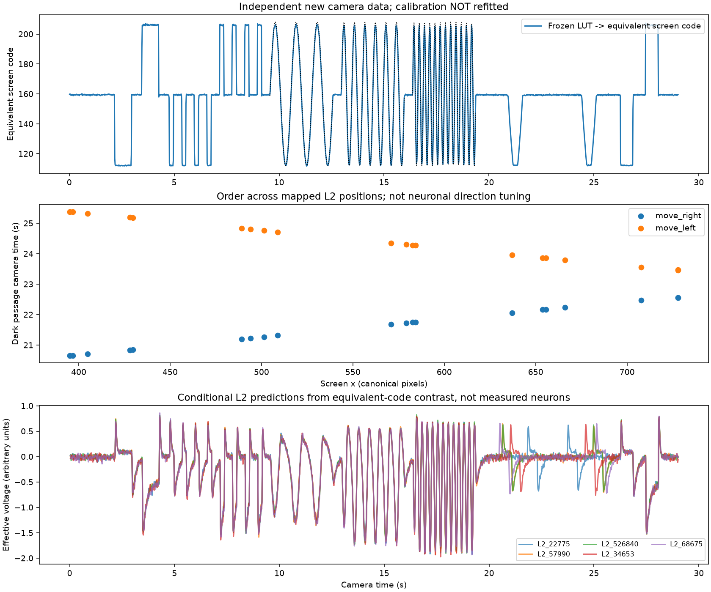
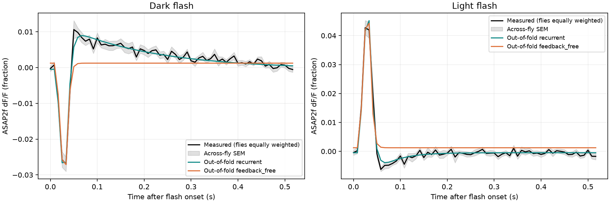

Fruit-fly-vision-bridge · 2026-09-27
What has been tested?
Geometry, camera engineering and biological prediction are separate evidence layers. A passing software check does not establish biological validity. 未宣称完整复现真实果蝇视觉。
01 · Published anatomical mapping
847 / 893 L2 IDs have an author-published direction, spanning 846 unique columns. The 46 missing directions remain unknown.
Mapping audit ·
Coordinate conventions02 · Controlled screen → camera
21 L2 IDs / 20 columns passed the recorded engineering protocol. Approximately 59.53 RGB frames/s; fixed black/white reference patches required. Private raw video is not distributed.
Measured summary ·
Conditions and failed precursors
03 · Public L2 physiology
103 selected ROI records / 13 flies. Whole-fly holdout: r=0.750, R²=0.447, RMSE=0.00663 ΔF/F. Five records have R²≤0; there is no clear advantage over the training-mean waveform template.
Open interactive per-record report / 逐记录报告 →
Live webcam → whole-brain bridge
Physical Logitech BRIO capture drove 217 visible L2 inputs into the persistent 166,700-neuron BrainCPU. Zero-input, disconnected-network and contrast replay controls passed; model speed was 0.1× wall time, with provisional camera geometry.
Aggregate hardware results ·
Scope and controls ·
Run your own webcamBinocular L2 bridge
Separate published left-eye mapping: 847/886 IDs. Saved BRIO image replay drives 229 left + 217 right inputs in the full graph, with independent-eye and disconnected controls. New live binocular capture is pending.
Replay evidence and scope ·
Binocular setupFindings · Reproduction · Next experiments
Archived reports preserve original calculation hashes. The release reproduction record separately identifies the current packaged code and environment.